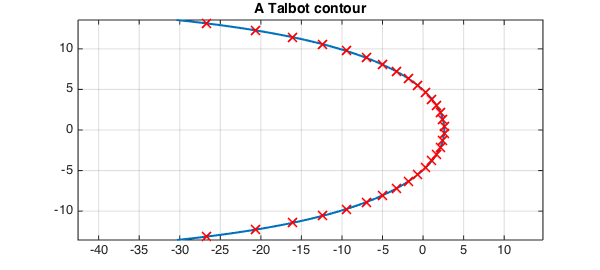
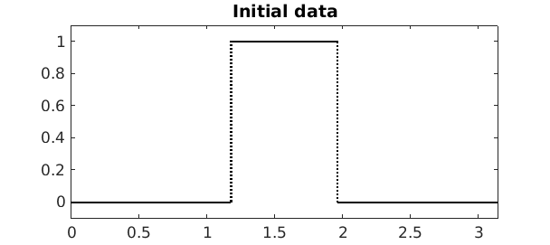
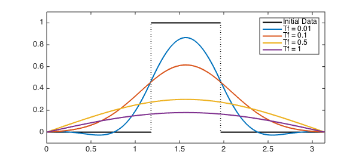

LW = 'LineWidth'; lw = 2; FS = 'FontSize'; fs = 14; MS = 'MarkerSize'; ms = 10;
In this example, we will illustrate how Chebfun can be used to compute the exponential of a linear operator using a complex contour integral. To keep things concrete, we consider the heat equation $u_t = u_{xx}$ on $[0, \pi]$, subject to Dirichlet boundary conditions $u(0, t) = u(\pi, t) = 0$ for all $t$. Let $u_0(x) = u(x, 0)$ be the initial condition. If
$$ L = \frac{d^2}{dx^2} $$
is the second derivative operator with these boundary conditions, we can write this equation as $u_t = Lu$. The solution at time $t$ is then given by $u(x, t) = e^{tL}u_0(x)$, so if we can compute $e^{tL}$ for any $t$, we have solved the problem.
Chebfun already has an expm function that we can use to compute $e^{tL}$; this was considered for the exact same problem in the example [1]. Instead of using this, we will employ an approach based on the identity
$$ e^{tL} = \frac{1}{2\pi i} \int_\gamma e^{tz} (zI - L)^{-1} \: dz, $$
where $\gamma$ is a piecewise smooth contour in the complex plane that encloses all the eigenvalues of $L$ and $I$ is the identity operator. Specifically, we will discretize the integral for $e^{tL}u_0(x)$ using an appropriate quadrature rule. At each quadrature node $z_k$, we solve the boundary value problem $(z_kI - L)u_k = u_0$ for a function $u_k$. We can then combine all of these solutions, multiplying them by the quadrature weights, to get an approximation to the solution to the original problem at time $t$.
From general theory, we know that the eigenvalues of our particular $L$ are $\lambda_n = -n^2, n = 1, 2, \ldots$. Therefore, an appropriate choice for $\gamma$ is a Hankel contour, which wraps around the negative real axis, the two ends joining "at infinity". There are many possible such contours; the one we shall employ is a particular Talbot contour (based on the cotangent function) whose parameters have been specially tuned so that the trapezoid rule converges very rapidly for integrals along it [3, 4]. The contour and corresponding quadrature nodes for a 32-point trapezoid rule, computed using code from Trefethen's gamma_talbot.m [2], are
N = 32; % Number of quadrature nodes
th = (-N/2+.5:N/2-.5)*pi/(N/2); % Trapezoid points in [-pi, pi]
a = -.2407; b = .2387; c = .7409; d = .1349i; % Weideman's special parameters
zk = N*(a + b*th.*cot(c*th) + d*th); % Quadrature nodes
dzk = b*cot(c*th) - b*c*th./sin(c*th).^2 + d; % N^(-1) times derivative
gamma = chebfun(@(t) N*(a + b*t.*cot(c*t) + d*t), [-pi, pi]);
plot(gamma, LW, lw)
hold on
plot(zk, 'rx', LW, lw, MS, ms)
hold off
grid on
axis equal
title('A Talbot contour', FS, fs)

Let's use the following function for our initial data:
u0 = chebfun(@(x) sign(x - 3*pi/8).*sign(-(x - 5*pi/8))/2 + 1/2, [0 pi], ...
'splitting', 'on');
plot(u0, 'k', LW, lw)
xlim([0 pi])
ylim([-0.1, 1.1])
title('Initial data', FS, fs)

Now we just loop through the quadrature points, solving the systems and adding up the contributions from each node as we go. We'll solve the system for four different final times:
Tf = [0.01 0.1 0.5 1];
uf = chebfun(zeros(2, length(Tf)), [0 pi]);
for (m = 1:1:length(Tf))
for (k = 1:1:(N/2))
Ls = chebop(0, pi);
Ls.op = @(x, u) zk(k)*u - diff(u, 2);
Ls.lbc = 0;
Ls.rbc = 0;
uf(:, m) = uf(:, m) + exp(zk(k)*Tf(m))*(Ls \ u0)*dzk(k);
end
end
uf = 2*real(uf/1i);
Here are the results:
plot(u0, 'k', LW, lw)
hold on
plot(uf, LW, lw)
hold off
xlim([0 pi])
ylim([-0.1 1.1])
legend('Initial Data', 'Tf = 0.01', 'Tf = 0.1', 'Tf = 0.5', 'Tf = 1');

These solutions have all the right characteristics we would expect from this equation. Note that the accuracy can be improved by increasing the number of quadrature nodes used at the cost of needing to solve more boundary-value problems.
References
-
Trefethen, L. N. "Heat Equation via EXPM". http://www2.maths.ox.ac.uk/chebfun/examples/pde/html/Erosion.shtml
-
Trefethen, L. N. "Ten Digit Algorithms". http://people.maths.ox.ac.uk/trefethen/tda.html
-
Trefethen, L. N., Weideman, J. A. C., and Schmelzer, T. Talbot quadratures and rational approximations. BIT Num. Math., Vol. 46, 2006, pp. 653-670.
-
Weideman, J. A. C. Optimizing Talbot's contours for the inversion of the Laplace transform. SIAM J. Numer. Anal., Vol. 44, No. 6, 2006, pp. 2342-2362.